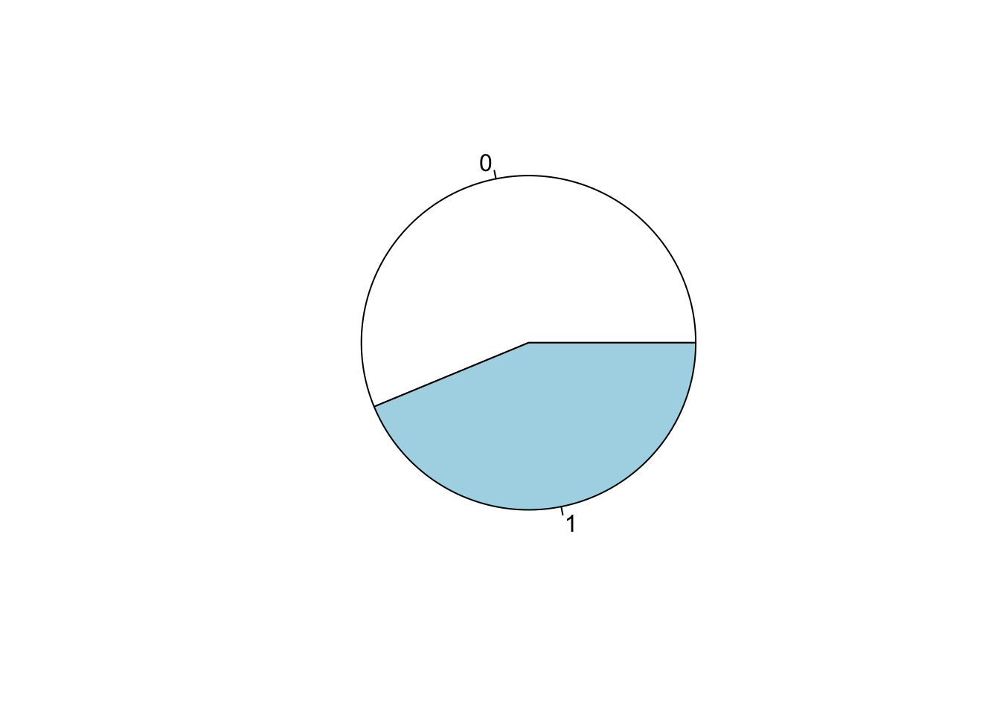
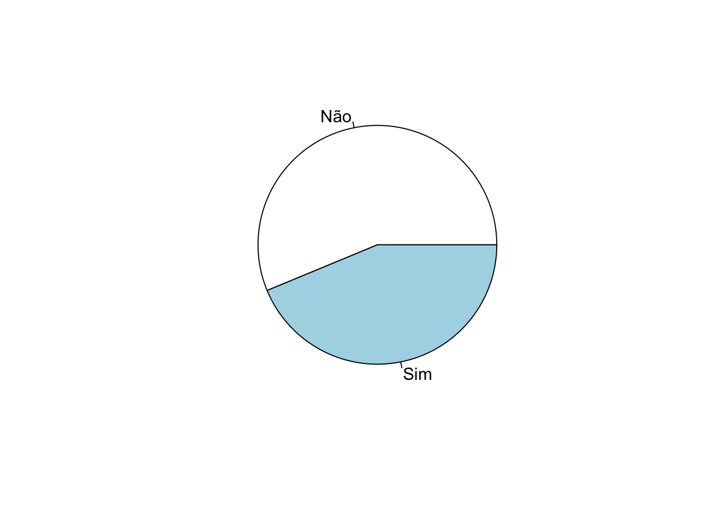
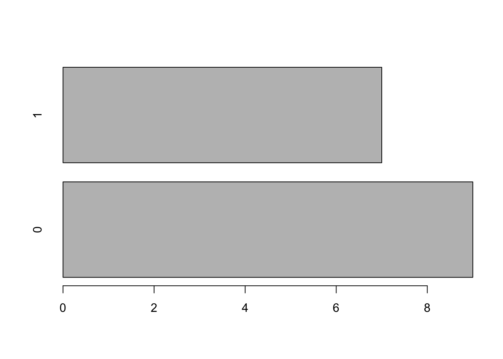
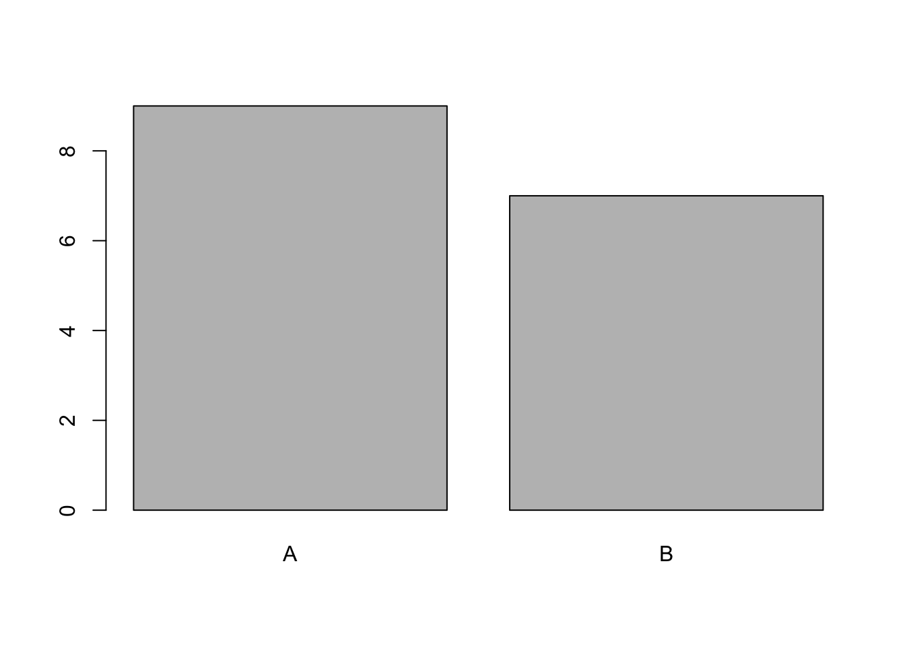
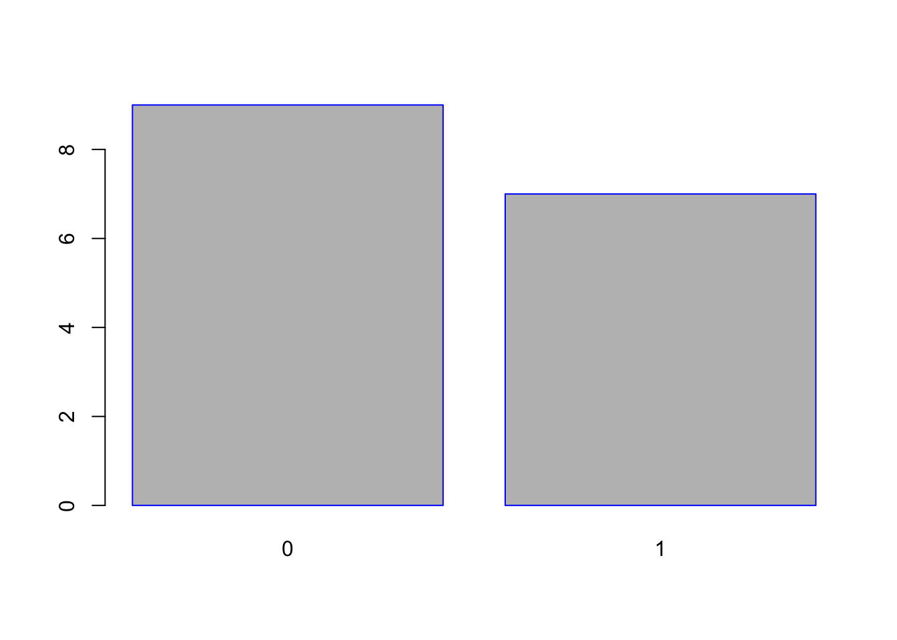
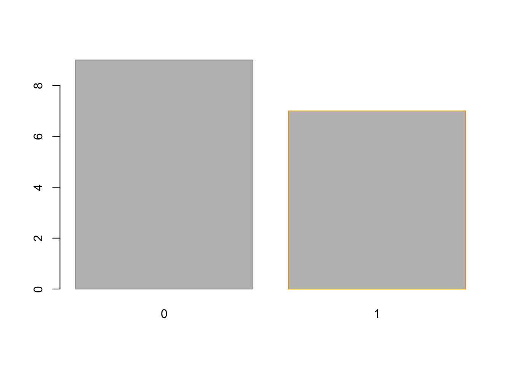
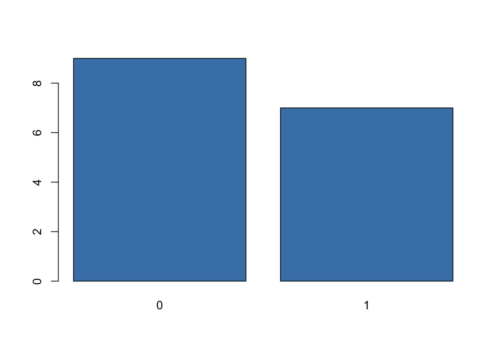
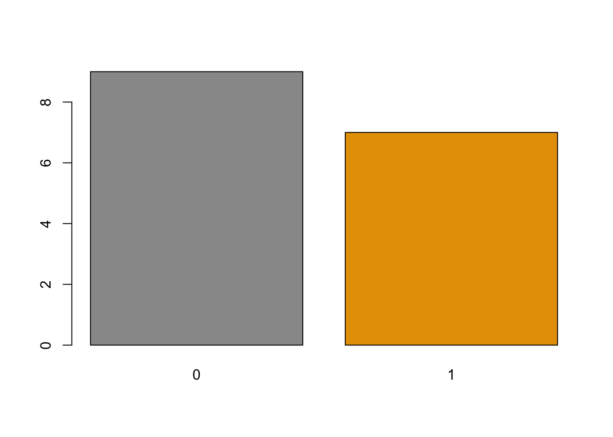
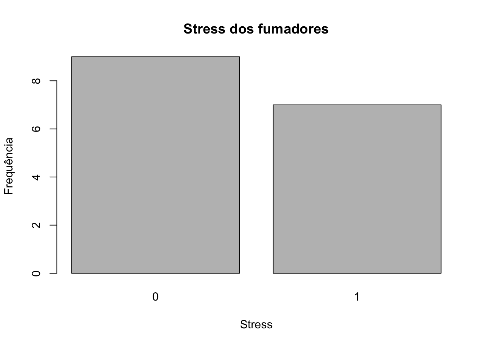

Variáveis (de tutorialDataframe)
stress <- c(0, 1, 1, 0, 0, 1, 1, 1, 0, 1, 1, 0, 0, 0, 0, 0)
stress <- as.factor (stress)
cigarros <- c(15,19,14,12,15,18,19,14,0,16,15,1,1,11,19,11)Dados desagregados (raw data)
stress## [1] 0 1 1 0 0 1 1 1 0 1 1 0 0 0 0 0
## Levels: 0 1table)t.stress <- table (stress)t.stress ## stress
## 0 1
## 9 7prop.table(t.stress )## stress
## 0 1
## 0.5625 0.4375prop.table(t.stress )*100## stress
## 0 1
## 56.25 43.75addmargins(prop.table(t.stress )*100)## stress
## 0 1 Sum
## 56.25 43.75 100.00
pie (t.stress )
barplot (t.stress )
barplot (prop.table(table(stress)))t1 <-table (cigarros)
t2 <- cbind(Freq=t1,
Cumul=cumsum(t1),
Relative=prop.table(t1),
Cum.Rel.=cumsum(prop.table(t1) ) )
t2## Freq Cumul Relative Cum.Rel.
## 0 1 1 0.0625 0.0625
## 1 2 3 0.1250 0.1875
## 11 2 5 0.1250 0.3125
## 12 1 6 0.0625 0.3750
## 14 2 8 0.1250 0.5000
## 15 3 11 0.1875 0.6875
## 16 1 12 0.0625 0.7500
## 18 1 13 0.0625 0.8125
## 19 3 16 0.1875 1.0000t2per <- cbind(Freq=t1,
Cumul=cumsum(t1),
Relative=prop.table(t1)*100,
Cum.Rel.=cumsum(prop.table(t1)
*100)) ;
t2per## Freq Cumul Relative Cum.Rel.
## 0 1 1 6.25 6.25
## 1 2 3 12.50 18.75
## 11 2 5 12.50 31.25
## 12 1 6 6.25 37.50
## 14 2 8 12.50 50.00
## 15 3 11 18.75 68.75
## 16 1 12 6.25 75.00
## 18 1 13 6.25 81.25
## 19 3 16 18.75 100.00http://www.sthda.com/english/wiki/bar-plots-r-base-graphs
labels)pie (table(stress), labels = c("Não", "Sim"))
tx <- table (stress)
tx## stress
## 0 1
## 9 7barplot(t.stress , horiz = TRUE)
barplot(t.stress, names.arg = c("A", "B"))
barplot(t.stress,
col = "grey",
border = "blue") # Uma unica cor 
barplot(t.stress,
col = "grey",
border = c("#999999", "#E69F00")) # Cor por categoria 
barplot(t.stress, col = "steelblue")
barplot(t.stress, col = c("#999999", "#E69F00"))
main title) e etiqutas eixos (axis labels)barplot(t.stress,
main = "Stress dos fumadores",
xlab = "Stress",
ylab = "Frequência")